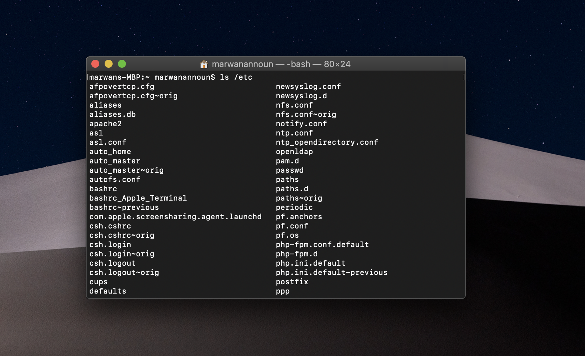
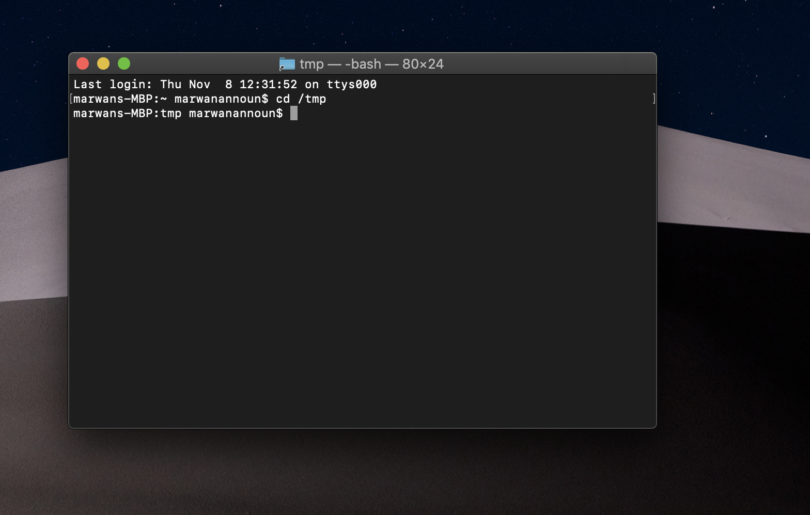

Absolute Path!
First, what is a path?
A path is a location to a folder or file in a file system of a Operating System, then is a combination of characters
and "/"
Now, I can tell you what is an absolute path
An absolute path is defined as specifying the location of a file or directory from the root directory(/).
In other words we can say absolute path is a complete path from start of actual filesystem from / directory.
To write an absolute path-name:
Start at the root directory ( / ) and work down.
Write a slash ( / ) after every directory name (last one is optional)
Example:
cat group1.txt
if for example, we use the above line, this commands work only and only if the "group1.txt" exist in the current
directory.
If not works, it's not a problem, the file is present somewhere, before restart the new command, you have to
know where
the file is saved.
Now, we supposed that you know where your file is saved you can rewrite the command.
cat /home/a1/group1.txt
Now, we suppose that the file is saved into folder a1 in home,
where: /home is the location respect to root, in fact, you have to descend one level
in the file system like above to access your file.
As you can see from the last commands, all the paths started from /directory whis is a root directory for every Unix
machines.
Other examples, where all are absolute path
/home/user/Document/group1.txt
/root/data/dev.jpg
/var/log/messages
Example of Absolute path's uses:
Now, as we learned from the previous pages we can use other commands in addition to "cat", such as:
ls /etc
ls /usr/share/games if you have games obviously :)
cd /usr/share/games
cd ~
cat /etc/passwd
cp /etc/passwd /tmp
cd /tmp
cat passwd
Now I will show you in many examples.
and so on.. with the sintax like above.

